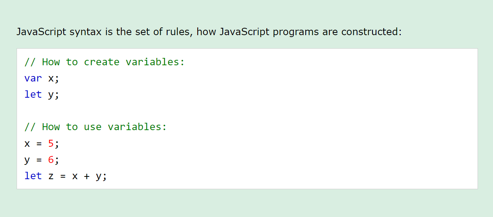
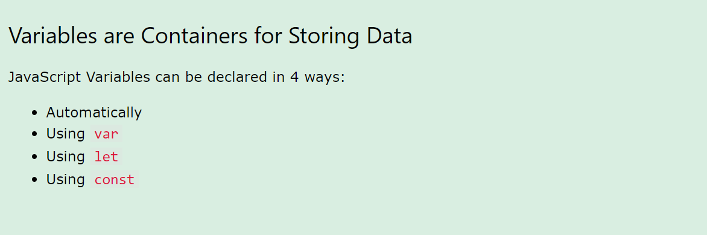
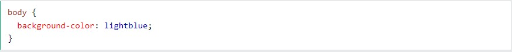
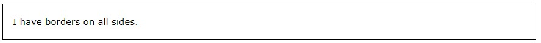
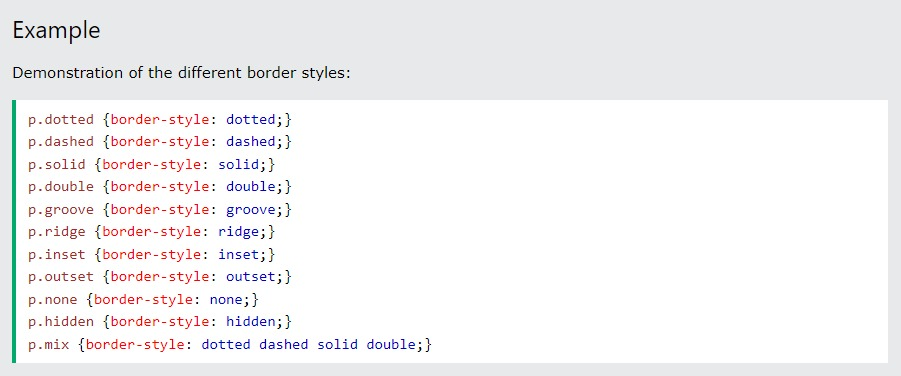

If you have a small screen, open the menu by clicking the top menu sign
This tutorial will teach you JavaScript from basic to advanced.
JS Introduction
JavaScript is the world's most popular programming language.
What is JS?
JavaScript is the programming language of the Web.
JavaScript is easy to learn.
JavaScript Syntax

JavaScript Variables

When tags like , and color attributes were added to the HTML 3.2 specification, it started a
nightmare for web developers. Development of large websites, where fonts and color information
were added to every single page, became a long and expensive process.
To solve this problem, the World Wide Web Consortium (W3C) created CSS.
CSS removed the style formatting from the HTML page!
If you don't know what HTML is, we suggest that you read our HTML Tutorial.
JavaScript Let
The let keyword was introduced in ES6 (2015)
Variables defined with let cannot be Redeclared
Variables defined with let must be Declared before use
Variables defined with let have Block Scope
JavaScript Const
The const keyword was introduced in ES6 (2015)
Variables defined with const cannot be Redeclared
Variables defined with const cannot be Reassigned
Variables defined with const have Block Scope
CSS Colors
Colors are specified using predefined color names, or RGB, HEX, HSL, RGBA, HSLA values.
CSS Color Names
In CSS, a color can be specified by using a predefined color name:
Tomato
Orange
DodgerBlue
MediumSeaGreen
Gray
SlateBlue
Violet
LightGray
CSS Backgrounds
The CSS background properties are used to add background effects for elements.
In these chapters, you will learn about the following CSS background properties:
background-color
background-image
background-repeat
background-attachment
background-position
background (shorthand property)
CSS background-color
The background-color property specifies the background color of an element.
Example
The background color of a page is set like this:

CSS Borders
The CSS border properties allow you to specify the style, width, and color of an element's
border.

CSS Border Style
The border-style property specifies what kind of border to display.
The following values are allowed:
dotted - Defines a dotted border
dashed - Defines a dashed border
solid - Defines a solid border
double - Defines a double border
groove - Defines a 3D grooved border. The effect depends on the border-color value
ridge - Defines a 3D ridged border. The effect depends on the border-color value
inset - Defines a 3D inset border. The effect depends on the border-color value
outset - Defines a 3D outset border. The effect depends on the border-color value
none - Defines no border
hidden - Defines a hidden border
The border-style property can have from one to four values (for the top border,
right border, bottom border, and the left border).
Example
Demonstration of the different border styles:

CSS Margins
Margins are used to create space around elements, outside of any defined borders.
The CSS margin properties are used to create space around elements, outside of any defined
borders.
With CSS, you have full control over the margins.
There are properties for setting the margin for each side of an element (top, right, bottom, and
left).
Margin - Individual Sides
CSS has properties for specifying the margin for each side of an element:
margin-top
margin-right
margin-bottom
margin-left
All the margin properties can have the following values:
auto - the browser calculates the margin
length - specifies a margin in px, pt, cm, etc.
% - specifies a margin in % of the width of the containing element
inherit - specifies that the margin should be inherited from the parent element
Tip: Negative values are allowed.
Example
Set different margins for all four sides of a " p "
element: